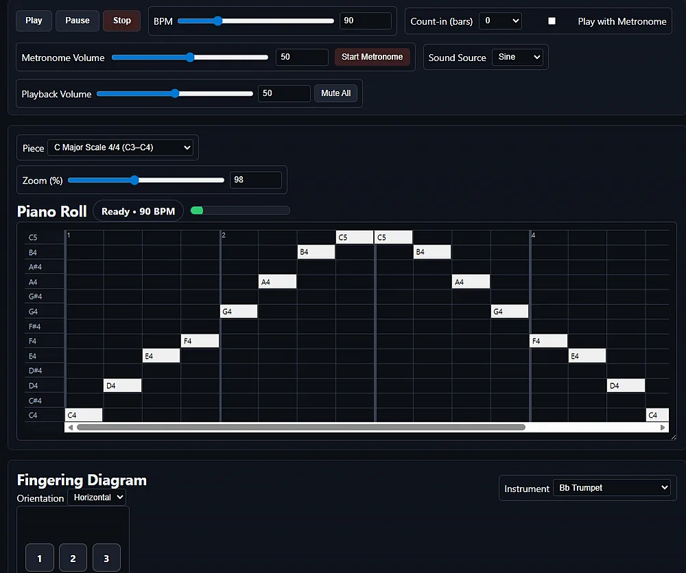
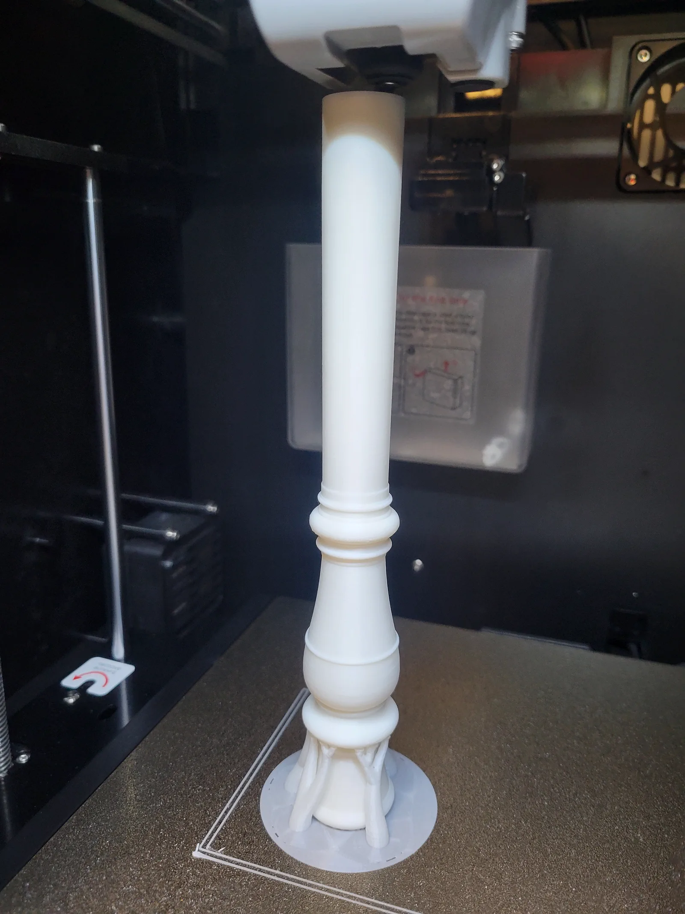

Services
From software development to instrument fabrication, we work with clients and research partners.
App development
Web and mobile applications for music. We work on pitch analysis, signal processing, data visualization, and interfaces.
View the tuner project
3D prototyping
CAD models for instruments, enclosures, and mechanical parts, using Blender and Autodesk Fusion. From design to prototypes ready for fabrication.
View the accessible recorders
Additive manufacturing
FDM and SLS printing for prototypes and functional parts. Material selection, print preparation, and post-processing for client and research projects.
View the printed instruments
Acoustic R&D
Research on musical instruments, printed materials, and digital signal processing, with academic and private partners.
View the string instrument modeling
Discuss your project
Initial consultations for new clients and research partnerships.